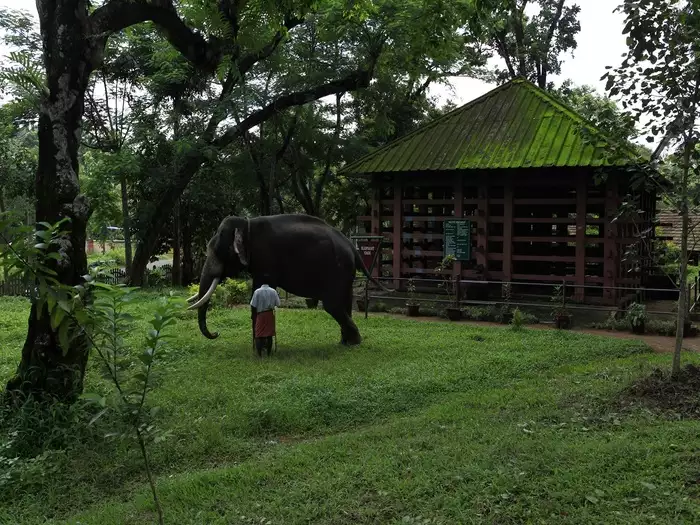
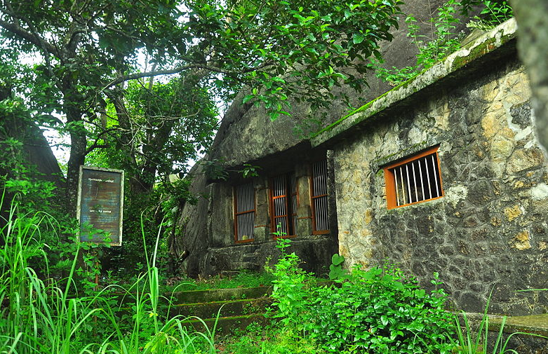

Pathanamthitta

With a plethora of religious places, Pathanamthitta is fondly referred to as the Holy Land. The place is also noted for its folklore and art forms, the most famous among them being Padayani, a traditional and ritual art form performed in Bhagavathi temples. Pathanamthitta is also where the greatest annual pilgrimage occurs, when over 1 million devotees go to Sabarimala, a temple situated at a hilltop. Home to many temples, heritage villages and cultural training centres, Pathanamthitta is also renowned for the annual 'Vallasadya', which is held at the Aranmula Sree Parthasarathy Temple. This grand festive occasion continues to attract travellers from far and wide. The place is also the hub of Kathakali, classical art forms and Kalaripayattu, and is known for its fairs and festivals.
Top Spots
Konni Elephant Camp

Rock-cut Cave Temple

Adavi
Gavi
It is a place where one can play with the adorable giants of the forest. Konni Elephant Training Centre, situated 11 km from Pathanamthitta is a prominent elephant training camp in Kerala that attracts a large number of tourists throughout the year. Visitors can feed, ride and interact with the elephants here.
Lost, abandoned or hurt baby elephants are rescued from forests and brought to the training centre. Here they are housed in wooden cages called aanakoodu, nursed back to health, and trained by experienced mahouts. The existing aanakoodu was built in 1942 from a wood named kambakam.
The Rock-cut Cave temple at Pathanamthitta dates back to 8th century and is of great archaeological significance. Situated in Kaviyoor near Thiruvalla, the temple is now preserved as a monument by the Archaeological Department. The temple structure bears close resemblance to the Pallava style of architecture, and the stone engravings here are regarded as among the earliest specimens of stone sculptures in Kerala.

Adavi in Pathanamthitta is a spot famous for its picturesque forest patch. A plethora of eco-tourism packages are available here. Adavi is set on the banks of the Kallar, and has a 5 km stretch of river frontage. Water rides are offered at this place, including coracle rafting. The pristine green stretch, the placid, clear waters and the lush forest patch make for an ideal picnic spot in the lap of Nature. The best time to visit is the monsoon season.

The landscape of Gavi comprises tropical forests, sprawling grasslands, and cardamom and tea plantations. The luscious greenery of this village makes it a desired destination for Nature lovers.
Endangered species like the Nilgiri Tahr and Lion-tailed Macaque are often spotted in Gavi's forests. It is also a haven for bird watchers as more than 260 species of birds are found here, including Great Pied Hornbills, woodpeckers and kingfishers.